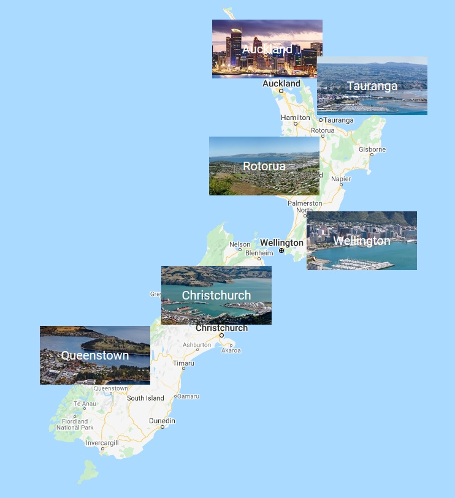

Es un país de Oceanía, localizado en el suroeste del océano Pacífico constituido en una monarquía parlamentaria. Está formado por dos grandes islas: la Isla Norte y la Isla Sur, junto a un gran número de islas menores. La capital de Nueva Zelanda es la ciudad de Wellington, situada en la isla Norte. La mayor parte de la población neozelandesa es de ascendencia europea; los indígenas maoríes son la minoría más numerosa. Los asiáticos y los polinesios también son minorías significativas, especialmente en las zonas urbanas. Aunque tiene tres idiomas oficiales, el más hablado, con diferencia, es el inglés. Isabel II, como reina de Nueva Zelanda, es la jefa de Estado del país y está representada por una gobernadora general que es Patsy Reddy y una primera ministra Jacinda Ardern. La superficie total es de 268 838 2 km² Son tres los idiomas principales el mas hablado es el inglés pero también esta maorí y la lengua de señas de Nueva Zelanda. La población total se estima (2020) que es 5 006 020 hab. La moneda oficial es el dólar neozelandés (NZD). Nueva Zelanda fue fundado en 1907.
